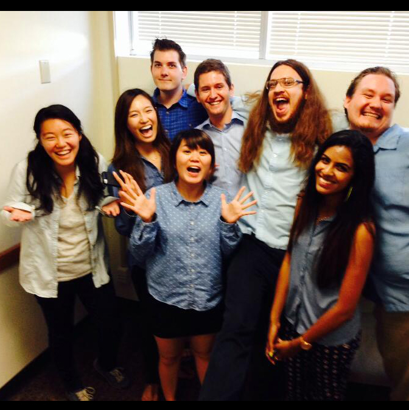
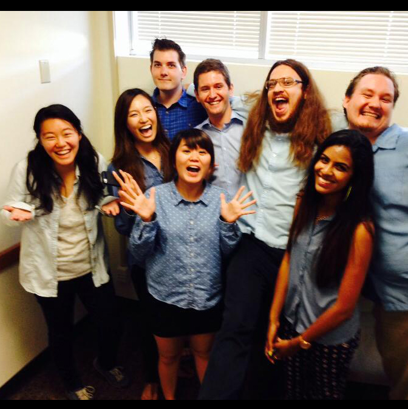

For our synchronous communication during lecture for effective communication between a large number of students and the teachers during lecture, we decided to use these features to meet user needs from our interviews:
ASK AWAY
post your questions as they come to mind.Students wanted to ask questions right away to avoid forgetting their question, asking an intimidating professor, and waiting in line to talk to the professor.
SHARE IT
share related links you stumble upon, or pictures of your notesStudents like to share material to help others out.
VOTE
popular questions go to the top, creating priority rankingTAs and professors often find repeating questions, and TAs have to try to find the important questions and issues rather than it being readily available.
CHECKPOINTS
for professors to gather instant feedback on students' progressProfessors want to know if they have been misunderstood or confusing, and to know if the students are understanding the material.
We have found that no current websites, applications, or tools fulfill this need. Piazza offers nonsynchronous communication Q&A platform, Facebook does not support effective and easy communication between our users, the iClicker only has options A-D for questions the professor offers (but not the students), and Blackboard's (TED's) usability is extremely poor and does not offer synchronous communication.
 
